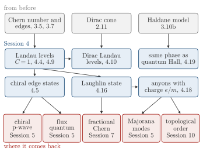

Advanced Quantum Materials 2027 · All lectures · Lecture notes
Session 4. Electrons in a Magnetic Field, Quantum Hall Effect and Landau Levels
Video lecture · Landscape lecture · session4.ipynb · PDF of the notes
From Session 3 we need two tools. The first is the Chern number of the occupied bands, equation (3.4), which fixes the Hall conductivity as \(\sigma_{xy}=C\,e^2/h\). The second is the bulk-boundary correspondence of Section 3.7, which says that a nonzero Chern number gives protected chiral edge states. In Session 3 we used these tools on purpose without any magnetic field, for the SSH chain and for the Haldane model of Section 3.10b. From Session 2 we need the three types of dispersion of Section 2.10, which are parabolic, Dirac and flat, and the Dirac cone of graphene of Section 2.11.
In this session a real magnetic field gives the flat bands, which is the case that we left open. First, we will see the integer quantum Hall effect, where the Landau levels are flat bands with Chern number one. We derive the Landau levels of parabolic electrons and of Dirac electrons, and we see why the plateaus of graphene survive to a higher temperature. Then we let a partially filled Landau level become a real many-body state. This gives the Laughlin wavefunction, with quasiholes that have fractional charge and anyonic statistics, which are the simplest example of fractionalization in this course. At the end we go back to the Haldane model and see that it is the same topological phase as the quantum Hall state.

- In Section 5.1 the fractional quantum Hall state and the superconductor are put at the two ends of the correlated states, and in Section 5.15 pairing splits an electron into two Majoranas.
- In Section 5.2 the flux quantum \(h/2e\) of a superconductor is compared with the quantized Hall conductance of this session.
- In Section 5.14 a chiral p-wave superconductor has chiral edge branches, as the Landau levels do, now made of Majoranas.
- In Section 7.1 fractional Chern insulators are one of the two main examples where mean-field theory fails.
- In Section 10.6 the Chern number is the example of a quantity that separates phases where no local order parameter does.